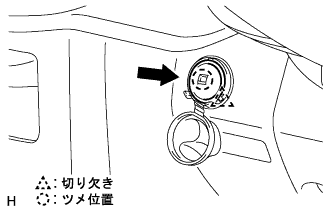

|
Attach the instrument cup holder with three screws.
Connect the connector of the power outlet socket.
Combine the eight claws and attach the instrument panel finish panel LWR CTR with two clips <c>.
Power outlet socket associated |
| 1. Power outlet socket cover installation |
|  |
Attach the power outlet socket cover to match the cutting position in the figure.
| 2. Power outlet socket associated |
Connect the connector, press the socket portion with the claws of the socket cover, and press it to the fullest.
| 3. Installation panel finish panel LWR CTR installation |
|
Attach the instrument cup holder with three screws.
Connect the connector of the power outlet socket.
Combine the eight claws and attach the instrument panel finish panel LWR CTR with two clips <c>.